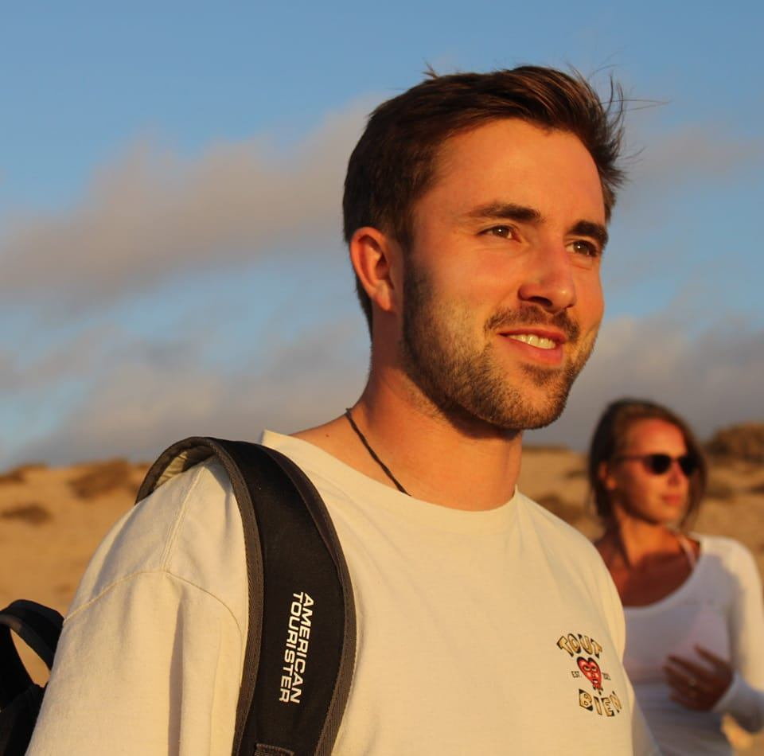

PhD Student, University of Cambridge

I am a PhD student at the University of Cambridge, Department of Applied Mathematics and Theoretical Physics (DAMTP). I am a member of the Numerical Relativity group, under supervision of Prof. Ulrich Sperhake. I am funded by the Centre for Doctoral Training in Data Intensive Science, which has provided me with a strong background in research computing, Bayesian data analysis, and machine learning.
I have always been passionate about research at the intersection of theoretical physics and astrophysics, e.g. black holes, gravitational waves and cosmology, which has shaped my educational trajectory. I have obtained Bachelor degrees (2020) in Mathematics and Physics as part of the TWIN-programme at KU Leuven, Belgium. I started university thinking that I would go on to study a Master in Astrophysics, but courses on General Relativity and particle physics sparked my interest for theoretical physics. As I couldn't decide, I decide to pursue both paths, which led me to obtain a Master's degree in Theoretical Physics (2022) and Astronomy and Astrophysics (2023) at KU Leuven. For the latter, I have undertaken a year-long Erasmus exchange to the Radboud University, Nijmegen, drawn by the interesting courses they had on offer.
Furthermore, I am the President of the Cambridge University Belgian Society for the academic year 2024-2025, staying on as co-President for 2025-2026. As a society, we aim to promote Belgian culture at the University of Cambridge and to provide a supportive, social network for students with (and without) ties to Belgium. We organise many events, most notoriously our Annual Black Tie Dinner!